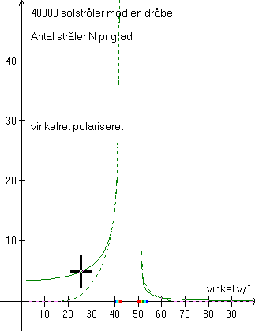

På ovenstående figur er som i »regnbuens farver« sendt 40000 (fyrre tusinde) stråler mod en dråbe, og så er antallet af stråler pr grad talt op for stråler med indfaldsparameter p < pmax for sig (optrukne kurver) og for stråler med indfaldsparameter p > pmax for sig (stiplede kurver).
Figuren viser strålerne i regnbuerne efter spredningstab svarende til F4 i »regnbuens farver« for vinkelret polariseret lys. Bølgelængden l = 546.1 nm.
Det ses, at det vinkelret polariserede lys i den primære regnbue kan interferere 100% for vinkler større end 37°. For vinkler mindre end 37° kan de to stråler kun delvist udslukke hinanden.
Vælg »Polarisation og farver« i programmet og studer ovenstående graf og den tilsvarende graf for parallelt polariseret lys. Gør rede for, hvilke indfaldende stråler hver del af graferne stammer fra. (8 dele!)
Bemærk de to regnbueintervaller på førsteaksen på figurerne og forklar, hvorfor det er usædvanligt at se interferensbuer ved den sekundære regnbue.
Hvorfor er det parallelt polariserede lys ladet ude af betragtning ved »Youngs interferens«?